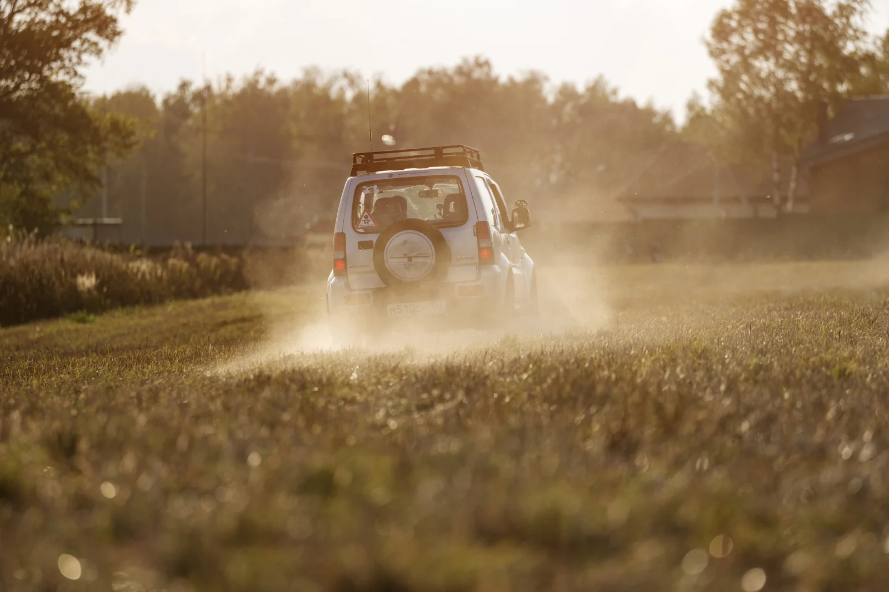
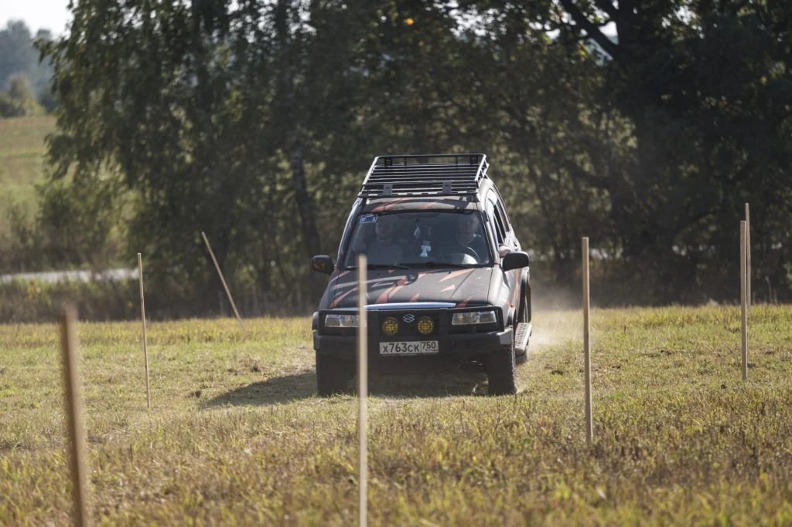
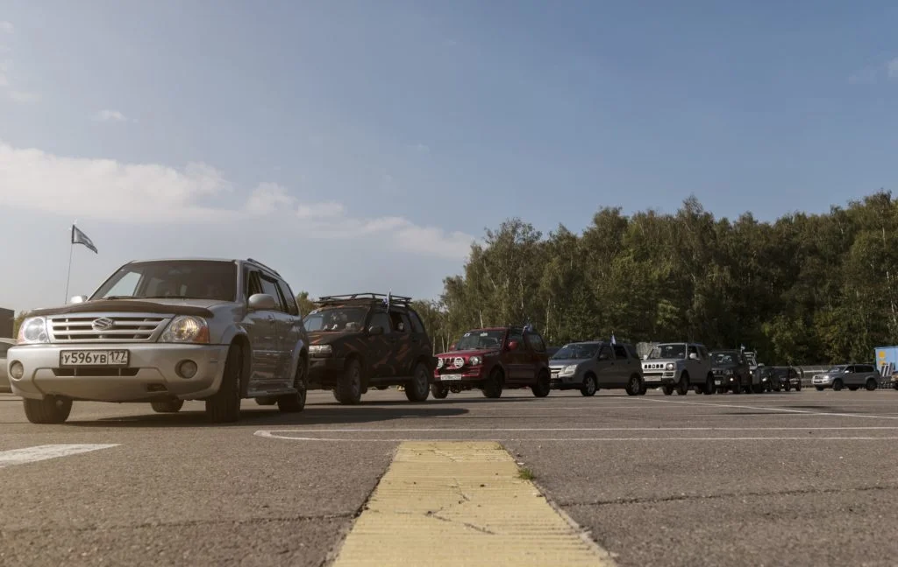
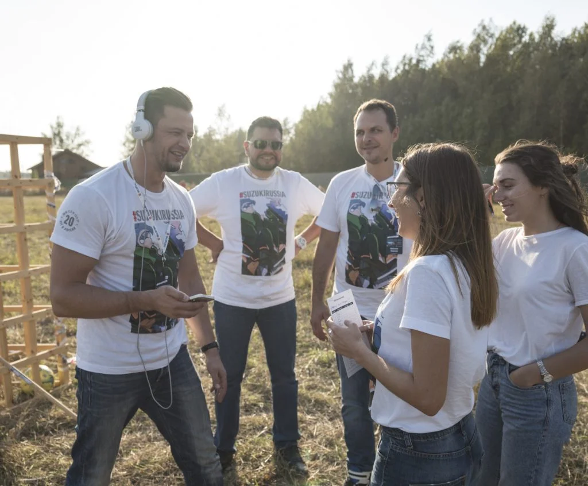
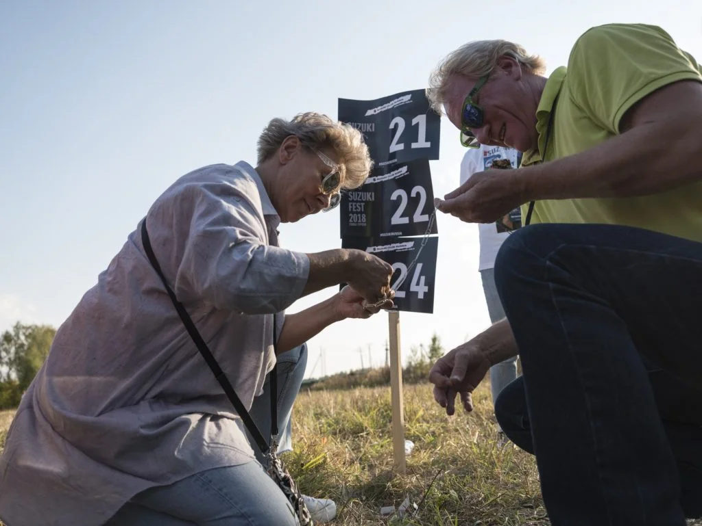
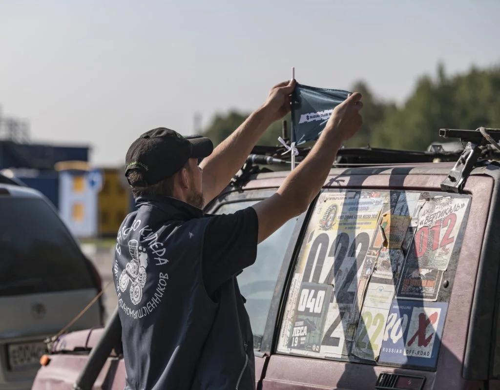
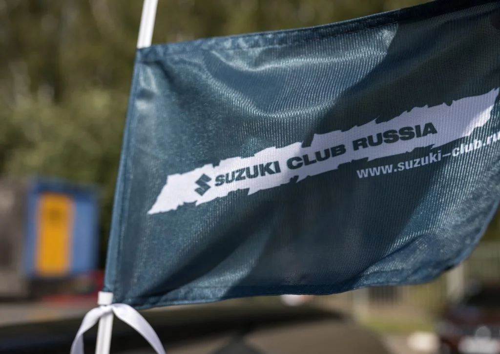
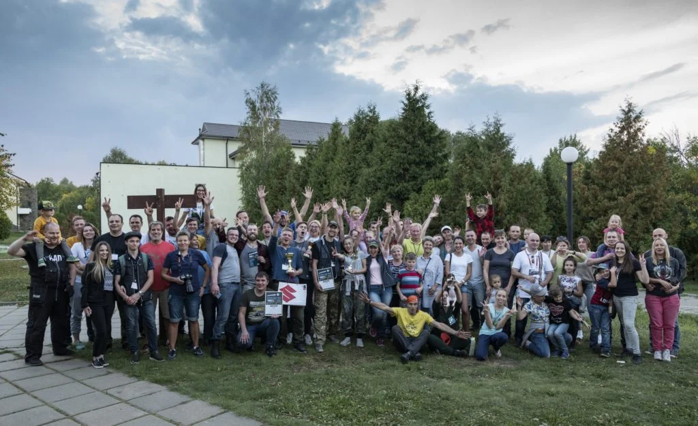

SUZUKI FEST 2018
Вне асфальта.
В кругу своих.
Автомобили, движение и люди, которых объединяет Suzuki. Фестиваль с клубным характером и настроением загородного приключения.
22 сентября 2018150 гостейSuzuki Russia
Общий интерес.
Общий маршрут.
Suzuki Fest 2018 собрал 150 гостей. Автомобили стали поводом для встречи, а общение и совместные задания — содержанием дня.
В фотоистории фестиваля — клубная символика, команды, колонна автомобилей и заезды на грунтовой площадке. Здесь марка раскрывается через людей и их увлечение.
150гостей
22.09.2018дата фестиваля
Suzukiавтомобильное сообщество
02 / ДВИЖЕНИЕХарактер —
Характер —
на маршруте.
Грунтовая трасса, повороты и пыль в солнечном свете. Автомобильная часть добавила фестивалю динамики и кадров, в которых чувствуется удовольствие от движения.

03 / ФОТОИСТОРИЯЛюди, машины
Люди, машины
и один общий день.






СЛЕДУЮЩИЙ ПРОЕКТ